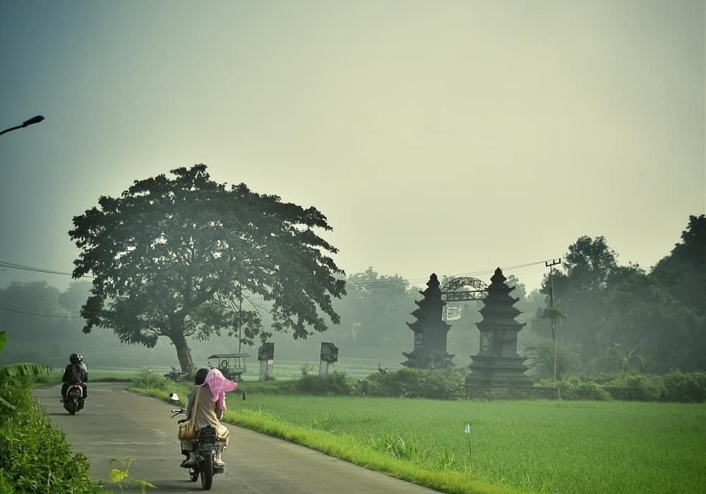
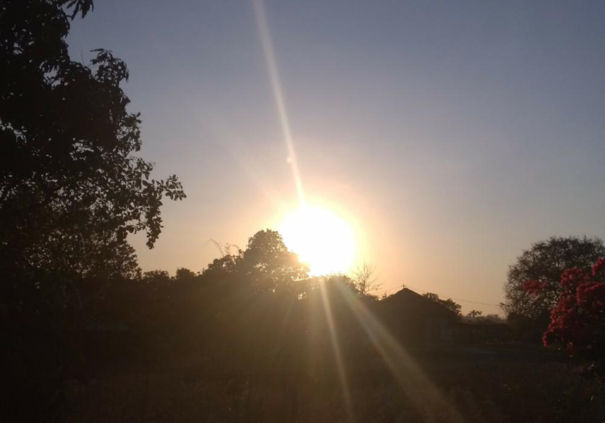
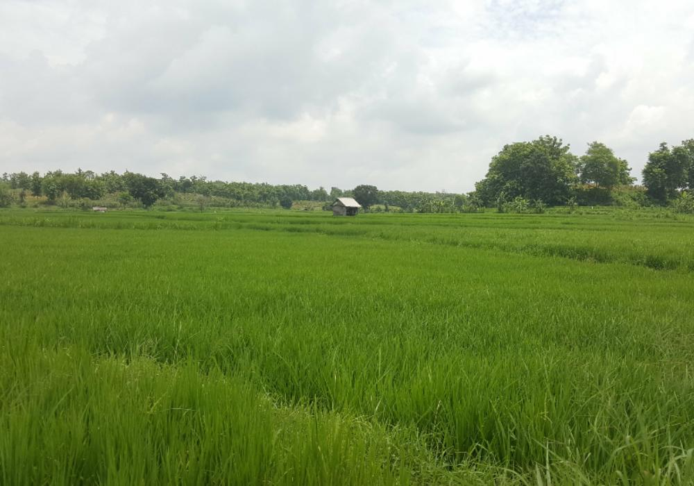

Kesongo 1 / 3  Perbatasan Desa 2 / 3  Matahari Terbit 3 / 3  Padi Disawah Perhatian Layanan Ini Dalam Proses Pengembangan. Desa Kesongo, Jl. Letnan Jarot No. 138 Kecamatan Kedungadem, Kabupaten Bojonegoro Provinsi Jawa Timur Kode Pos 62195 Email: Pemdeske9@gmail.com